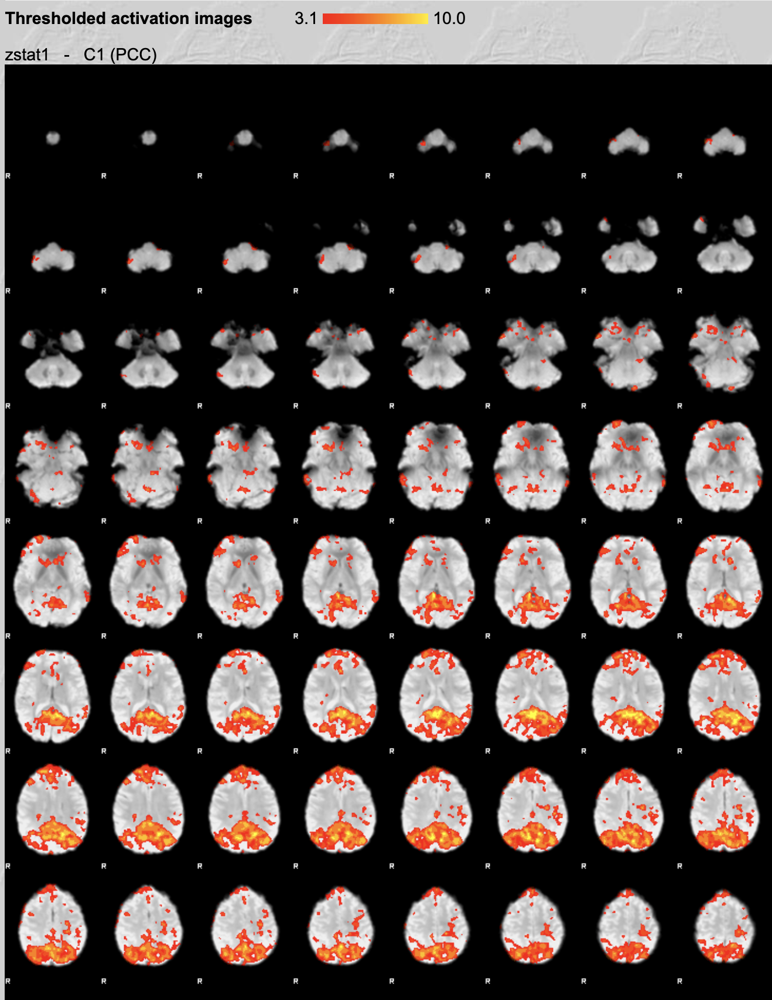
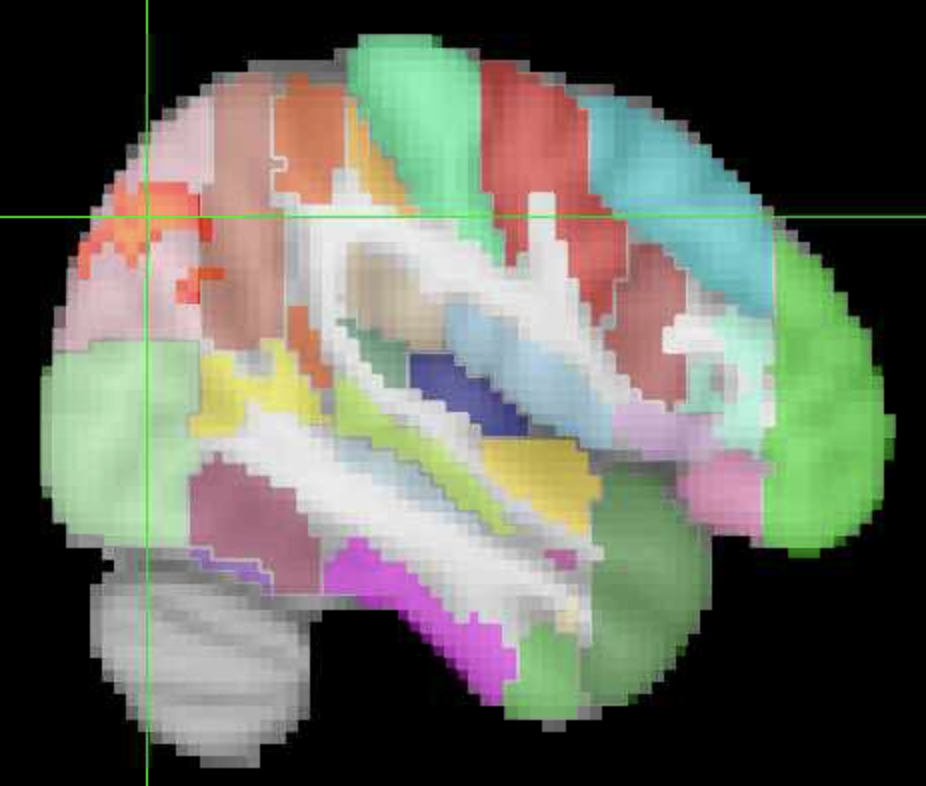

Seed-based functional connectivity analysis of resting-state data using FSL
Created by Aamir Sohail, University of Birmingham, for the Magnetic Resonance Imaging in Cognitive Neuroscience (MRICN) module, Spring Term 2024.
This tutorial is based upon a previous tutorial: FSL fMRI Resting State Seed-based Connectivity by Dianne Paterson at the University of Arizona, but which has been adapted to run on the BEAR systems at the University of Birmingham, and has some additional material added.
In this session, we will run a group-level functional connectivity analysis on resting-state fMRI data of three participants. We will specifically look at the functional connectivity of the posterior cingulate cortex (PCC), a region of the default mode network (DMN) that is commonly found to be active in resting-state data.
To do this, we will:
- extract a mean-timeseries for a PCC seed region for each participant,
- run single-subject level analyses, one manually and bash scripting the other two,
- run a group-level analysis using the single-level results
- Finally, we will figure out which brain regions our active voxels are in, using atlases in FSL, and Neurosynth.
There hopefully shouldn’t be any issues, but pelase let me know if there are!
Preparing the data
Setting up
Navigate to your shared directory within the MRICN folder and copy the data:
cd /rds/projects/c/chechlmy-chbh-mricn/xxx
cp -r /rds/projects/c/chechlmy-chbh-mricn/aamir_test/SBC .
cd SBC
lsYou should see the following:
sub1 sub2 sub3Each of the folders has a single resting-state scan, called sub1.nii.gz, sub2.nii.gz and sub3.nii.gz respectively.
Creating the PCC seed
We will now create our seed region for the PCC. To do this, firstly load FSL and fsleyes in the terminal by running:
module load FSL/6.0.5.1-foss-2021a
module load FSLeyes/1.3.3-foss-2021aCheck that we are in the correct directory (blah/your_username/SBC):
pwdand create a new directory called seed:
mkdir seedNow when you run ls you should see:
seed sub1 sub2 sub3Lets open FSLeyes:
fsleyes &We need to open the standard MNI template brain, select the PCC and make a mask.
Here are the following steps:
- Navigate to the top menu and click on
File ➜ Add standardand selectMNI152_T1_2mm_brain.nii.gz. - When the image is open, click on
Settings ➜ Ortho View 1 ➜ Atlases. An atlas panel opens on the bottom section. - Select
Atlas information(if it already hasn’t loaded). - Ensure Harvard-Oxford Cortical Structural Atlas is selected.
- Go into ‘Atlas search’ and type
cingin the search box. Check the Cingulate Gyrus, posterior division (lower right) so that it is overlaid on the standard brain. (The full name may be obscured, but you can always check which region you have loaded by looking at the panel on the bottom right).

At this point, your window should look something like this:

To save the seed, click the save symbol which is the first of three icons on the bottom left of the window.

The window that opens up should be your project SBC directory. Open into the seed folder and save your seed as PCC.
Extracting the time-series
We now need to binarise the seed and to extract the mean timeseries. To do this, leaving FSLeyes open, go into your terminal (you may have to press Enter if some text about dc.DrawText is there) and type:
cd seed
fslmaths PCC -thr 0.1 -bin PCC_binIn FSLeyes now click File ➜ Add from file, and select PCC_bin to compare PCC.nii.gz (before binarization) and PCC_bin.nii.gz (after binarization). You should note that the signal values are all 1.0 for the binarized PCC.

You can now close FSLeyes.
For each subject, you want to extract the average time series from the region defined by the PCC mask. To calculate this value for sub1, do the following:
cd ../sub1
fslmeants -i sub1 -o sub1_PCC.txt -m ../seed/PCC_binThis will generate a file within the sub1 folder called sub1_PCC.txt. We can have a look at the contents by running cat sub1_PCC.txt.The terminal will print out a bunch of numbers with the last five being:
20014.25528
20014.919
20010.17317
20030.02886
20066.05141This is the mean level of ‘activity’ for the PCC at each time-point.
Now let’s repeat this for the other two subjects.
cd ../sub2
fslmeants -i sub2 -o sub2_PCC.txt -m ../seed/PCC_bin
cd ../sub3
fslmeants -i sub3 -o sub3_PCC.txt -m ../seed/PCC_binNow if you go back to the SBC directory and list all of the files within the subject folders:
cd ..
ls -RYou should see the following:

Please let me know if you do not get this!!
This is all we need to run the subject and group-level analyses using FEAT.
Running the FEAT analyses
Single-subject analysis
Close your terminal, open another one, move to your SBC folder, load FSL and open Feat:
cd /rds/projects/c/chechlmy-chbh-mricn/xxx/SBC
module load bear-apps/2022b
module load FSL/6.0.7.6
source $FSLDIR/etc/fslconf/fsl.sh
Feat &We will run the first-level analysis for sub1. Set-up the following settings in the respective tabs:
Data
Select 4D data: Click the folder icon, go into the sub1 folder and choose sub1.nii.gz`. Click OK. You will see a box saying that the ‘Input file has a TR of 1…’ this is fine, just click OK again.
Output directory: Click into the sub1 folder and click OK. Nothing will be in the right hand column, but that is because there are no folders within sub1. We will create our .feat folder within sub1.
This is what your data tab should look like (with the input data opened for show).

Pre-stats
The data has already been pre-processed, so set Motion correction to ‘None’ and uncheck BET. Your pre-stats should look like this:
Registration
Nothing needs to be changed here.
Stats
Click on ‘Full Model Setup’ and do the following:
- Keep the Number of original EVs as 1.
- Type PCC for the EV name.
- Select Custom (1 entry per volume) for the Basic shape. Click into the
sub1folder and selectsub1_PCC.txt. This is the mean time series of the PCC for sub-001 and is the statistical regressor in our GLM model. This is different from analyses of task-based data which will usually have anevents.tsvfile with the onset times for each regressor of interest.
The first-level analysis will identify brain voxels that show a significant correlation with the seed (PCC) time series data.
- Select ‘None’ for Convolution, and uncheck both ‘Add temporal derivate’ and ‘Apply temporal filtering’.
Your window should look like this:

In the same General Linear Model window, click the Contrast & F-tests tab, type PCC in the title, and click Done. A blue and red design matrix is displayed. You can close it.
Post-stats
Nothing needs to be changed here.
You are ready to run the first-level analysis. Click Go to run. On BEAR, this should only take a few minutes.
Examining the FEAT output
To actually examine the output, go to the BEAR Portal and at the menu bar select Files ➜ /rds/projects/c/chechlmy-chbh-mricn/

Then go into SBC/sub1.feat, select report.html and click View (top left of the window). Navigate to the Post-stats tab and examine the outputs. It should look like this:

Running the other subjects and the group-level analysis
We can now run the second and third subjects. As we only have three subjects, we could manually run the other two by just changing three things:
- The fMRI data path
- The output directory
- The
sub_PCC.txtpath
Whilst it would probably be quicker to do it manually in this case, it is not practical in other instances (e.g., more subjects, subjects with different number of scans etc.).. So, instead we will be scripting the first level FEAT analyses for the other two subjects.
(Go back into your terminal, you don’t need to open a new terminal or close Feat)
The setup for each analysis is saved as a specific file the design.fsf file within the FEAT output directory. We can see by opening the design.fsf file for sub1:
pwd # make sure you are in your SBC directory e.g., blah/xxx/SBC
cd sub1.feat
cat design.fsfFeat acts as a large ‘function’ with its many variables corresponding to the options that we choose when setting up in the GUI. We just need to change three of these (the three mentioned above) which in the design.fsf file correspond to:
set fmri(outputdir) "/rds/projects/c/chechlmy-chbh-mricn/xxx/SBC/sub1"
set feat_files(1) "/rds/projects/c/chechlmy-chbh-mricn/xxx/SBC/sub1/sub1/"
set fmri(custom1) "/rds/projects/c/chechlmy-chbh-mricn/xxx/SBC/sub1/sub1_PCC.txt"To do this, please copy the run_feat.sh script into your own SBC directory:
cd ..
pwd # make sure you are in your SBC directory
cp /rds/projects/c/chechlmy-chbh-mricn/axs2210/SBC/run_feat.sh .This is the script:
#!/bin/bash
# Prompt the user for the University account name
read -p "Please enter your University account name: " account_name
# Define the base directory with the user-provided account name
base_dir="/rds/projects/c/chechlmy-chbh-mricn/${account_name}/SBC"
echo "Using base directory: $base_dir"
# Loop over each subject's data
for sub in sub2 sub3; do
# Define the input .nii.gz file for the subject
input_file="${base_dir}/${sub}/${sub}.nii.gz"
# Define the output FEAT directory
output_dir="${base_dir}/${sub}.feat"
# Define the custom EV file for the subject
custom_ev_file="${base_dir}/${sub}/${sub}_PCC.txt"
# Define the .fsf file for the subject
design_file="${base_dir}/${sub}.fsf"
# Copy the template design file from sub1 and modify it for the current subject
cp "${base_dir}/sub1.feat/design.fsf" "$design_file"
# Replace the input file path in the design file
sed -i "s|set feat_files(1) \".*\"|set feat_files(1) \"${input_file}\"|g" "$design_file"
# Replace the output FEAT directory in the design file
sed -i "s|set fmri(outputdir) \".*\"|set fmri(outputdir) \"${output_dir}\"|g" "$design_file"
# Replace the custom EV file in the design file
sed -i "s|set fmri(custom1) \".*\"|set fmri(custom1) \"${custom_ev_file}\"|g" "$design_file"
# Run FEAT analysis
feat "$design_file"
# Remove the .fsf file from the SBC directory after running FEAT
rm -f "$design_file"
done
echo "FEAT analysis completed for sub2 and sub3."The first line is always needed to run bash scripts. The rest of the code just replaces the 3 things we wanted to change for the defined subs, sub2 and sub3.
You can have a look at the script yourself by typing cat run_bash.sh.
Run the code (from your SBC directory) by typing:
bash run_feat.sh
It will ask you for your University account name, this is your ADF username (axs2210 for me).
This should take about 5-10 minutes to run. In the meantime feel free to follow me on GitHub @sohaamir and on Twitter @AamirNSohail (not part of the module but always appreciated 😊).
If you have a look at the report.htmlfile for both, they should look like this:
sub2

sub3
Running the Group-level analysis
Ok, so now we have our FEAT directories for all three subjects, we can run the group level analysis. Close Feat and open a new Feat by running Feat & in your SBC directory. Here is the group-level FEAT setup:
Data tab
- Change ‘First-level analysis’ to ‘Higher-level analysis’
- Keep the default option, for ‘Inputs are lower-level FEAT directories’.
- Keep the ‘Number of inputs’ as 3.
- Click the ‘Select FEAT directories’. Click the yellow folder on the right to select the FEAT folder that you had generated from each first-level analysis.
By now, your window should look like this (before closing the Input window):

5) Keep ‘Use lower-level copes ticked’. 6) In ‘Output directory’ stay in your current directory (it should be SBC), and in the bottom bar, type in PCC_group at the end of the file path. Don’t worry about it being empty, FSL will fill out the file path for us. If you click the folder again, this is what mine looks like:

Stats
Leave the ‘Mixed effects: FLAME 1’ and click Full model setup. In the General Linear Model window, name the model ‘PCC’ and make sure the EVs are all 1s. The interface should look like this:

After that, click ‘Done’ and close the GLM design matrix that pops up.
(You don’t need to change anything in the ‘Contrasts and F-tests’ tab).
Post-stats
Change the Z-threshold from 3.1 to 2.3. This is because we only have data from 3 subjects, and so aren’t likely to see much at a high statistical threshold. If running analysis on a larger group, we would usually keep this at 3.1.
Click ‘Go’ to run!
This should only take about 2-3 minutes. When this is running, you can load the report.html through the file browser as you did for the individual subjects. Click on the ‘Results’ tab, and then on ‘Lower-level contrast 1 (PCC)’. Your results should look like this:

These are voxels demonstrating significant functional connectivity with the PCC at a group-level (Z > 2.3).
Examining the output
So, we have just ran our group-level analysis. Let’s have a closer look at the outputted data. Close FEAT and your terminal, open a new one, go to your SBC directory and load up FSL and FSLeyes:
cd /rds/projects/c/chechlmy-chbh-mricn/xxx/SBC
module load FSL/6.0.5.1-foss-2021a
module load FSLeyes/1.3.3-foss-2021a
fsleyes &In fsleyes, open up the standard brain (Navigate to the top menu and click on ‘File ➜ Add standard’ and select MNI152_T1_2mm_brain.nii.gz). Then add in our contrast image (File ➜ Add from file, and then go into the PCC_group.gfeat and then into cope1.feat and open the file thresh_zstat1.nii.gz).
When that is opened, change the colour to ‘Red-Yellow’ and the ‘Minimum’ up to 2.3 (The max should be around 3.12). If you set the voxel location to (42, 39, 52) your screen should look like this:

This is the map that we saw in the report.html file. In fact we can double check this by changing the voxel co-ordinates to (45, 38, 46). Our image matches the one on the far right below:
Our thresholded image in fsleyes

The FEAT output

Bonus: Identifying regions of interest with atlases and Neurosynth
So we know which voxels demonstrate significant correlation with the PCC, but what regions of the brain are they in? Let’s go through two ways in which we can work this out.
Firstly, we can simply just overlap an atlas on the image and see which regions the activated voxels fall under.
To do this, navigate to the top menu and click on ‘Settings ➜ Ortho View 1 ➜ Atlases’. Then at the bottom middle of the window, select the ‘Harvard-Oxford Cortical Structural Atlas’ and on the window directly next to it on the right, click ‘Show/Hide’. The atlas should have loaded up but is blocking the voxels. Change the Opacity to about a quarter.

By having a look at the ‘Location’ window (bottom left) we can now see that significant voxels of activity are mainly found in the: Right superior lateral occipital cortex

Posterior cingulate cortex (PCC) / precuneus

Alternatively, we can also use Neurosynth, a website where you can get the resting-statefunctional connectivity of any voxel location or brain region. It does this by extracting data from studies and performing a meta-analysis on brain imaging studies that have results associated with your voxel/region of interest.
If you click the following link, you will see regions demonstrating significant connectivity with the posterior cingulate.
If you type (46, -70, 32) as co-ordinates in Neurosynth, and then into the MNI co-ordinates section in fsleyes, not into the voxel location, because Neurosynth works with MNI space, you can see that in both cases the right superior lateral occipital cortex is activated. Note that the orientations of left and right are different between Neurosynth and fslsyes.
This is a great result given that we only have three subjects!


Congrats! You have ran (I imagine) your first functional connectivity analysis!
And that is also the end of the MRICN module 😢